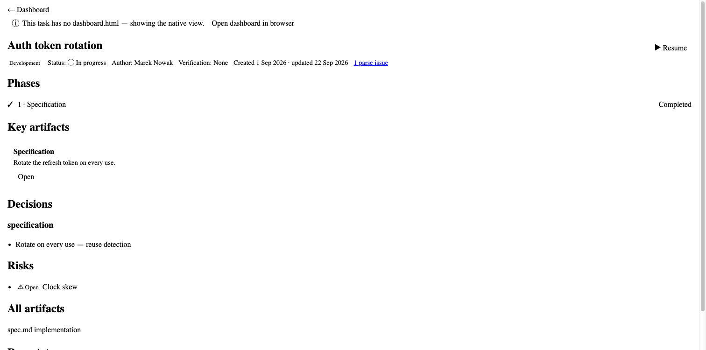
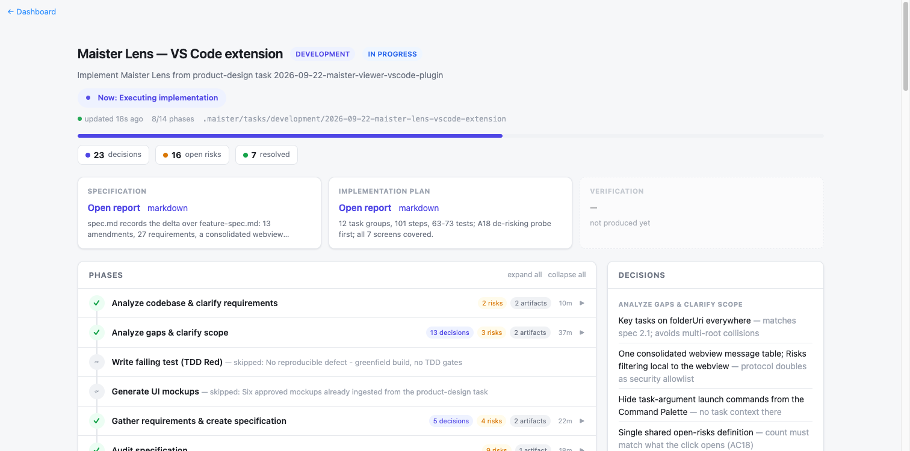
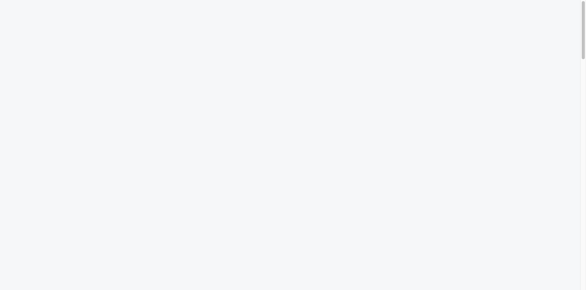

Route taken — there was no dev server
This is a VS Code extension, so there is no app to point a browser at. I reproduced
test/dom/harness.ts outside the Playwright runner: ran npm run build, bundled
src/panel/hostDashboard.ts for Node, and regenerated the two pages the harness builds — the
fallbackTask bundle shell and the re-hosted dev-real/dashboard.html (three
insertions + shim + dashboard-data.js). Because the Playwright MCP browser blocks the
file: protocol, I served the tree over http://127.0.0.1:8899 and passed that origin
as cspSource/baseHref, injecting the harness's acquireVsCodeApi stub as
a nonced inline script so the hosted CSP admits it. Every assertion below comes from that live page, not
from reading source. Corroboration: npm run test:dom — 19 passed.
| Field | Value |
|---|---|
| Base URL | http://127.0.0.1:8899 (local static server over generated surfaces) |
| Browser | Playwright MCP Chromium |
| Viewport | 1280×720 |
| Auth context | anonymous (n/a — webview surfaces) |
| Test data | test/fixtures/tasks/dev-real/; inline FallbackPayload |
Verification Scenarios
4.1 Native back link — structure and position ✅ Passed
FR3 AC1, AC3, AC4, AC6
| # | Action | Expected | Actual | Status |
|---|---|---|---|---|
| 1 | Read #root.firstElementChild | <nav aria-label="Breadcrumb"> | NAV, aria-label="Breadcrumb" | ✅ |
| 2 | Read its child button | <button type="button" class="link">← Dashboard</button> | exact match | ✅ |
| 3 | Read tabindex | absent | null | ✅ |
4.2 Native back link — first focusable by real Tab ✅ Passed
FR3 AC3 · Accessibility Requirements
| # | Action | Expected | Actual | Status |
|---|---|---|---|---|
| 1 | Press Tab once from page start | Focus on the back link | BUTTON.link "← Dashboard" | ✅ |
| 2 | Compare against focusable inventory | index 0 | isFirstFocusable: true, 7 focusables | ✅ |
| 3 | Count positive tabindex | 0 | 0 | ✅ |
4.3 Native back link — activation posts exactly openDashboard ✅ Passed
FR3 AC2
| # | Action | Expected | Actual | Status |
|---|---|---|---|---|
| 1 | Press Enter | One openDashboard | [{"type":"ready"},{"type":"openDashboard"}] | ✅ |
| 2 | Inspect payload shape | No extra keys | exact match | ✅ |
4.4 Native surface — no inline styles (CSP conformance) ✅ Passed
FR3 AC5 · Success Criterion 6
| # | Action | Expected | Actual | Status |
|---|---|---|---|---|
| 1 | querySelectorAll('[style]').length | 0 | 0 | ✅ |
| 2 | style attr on nav and button | null | null, null | ✅ |
Note: computed color was rgb(0,0,0) because
--vscode-textLink-foreground is undefined outside VS Code — a harness limitation, not a defect.

4.5 Hosted back link — injected, first body child, genuinely visible ✅ Passed
FR4 AC1, AC2, AC4
| # | Action | Expected | Actual | Status |
|---|---|---|---|---|
| 1 | document.body.firstChild | the injected nav | NAV.maister-lens-back, isFirstBodyChild: true | ✅ |
| 2 | aria-label / button text | Breadcrumb / ← Dashboard | exact match, type="button", no tabindex | ✅ |
| 3 | Computed visibility of nav | block / visible / 1 | block / visible / 1; max-height none, overflow visible, float none | ✅ |
| 4 | Computed visibility of button | visible, themed | inline-block / visible / 1, color rgb(55,148,255), cursor pointer | ✅ |
| 5 | Layout box & checkVisibility() | non-zero box in viewport | 81.25×18.19 at (12,10); true | ✅ |
4.6 Hosted back link — one openDashboard, zero navigate ✅ Passed
FR4 AC3, AC5
| # | Action | Expected | Actual | Status |
|---|---|---|---|---|
| 1 | Click the back link (real mouse event) | one openDashboard | openDashboardCount: 1 | ✅ |
| 2 | Count navigate messages | 0 | navigateCount: 0 | ✅ |
| 3 | Park focus on body, Tab once | focus on the back link | isFirstFocusable: true of 7 | ✅ |
| 4 | Press Enter | one openDashboard, zero navigate | 1 / 0 | ✅ |
| 5 | Post {type:'refresh'}, await re-render | still first child and visible | stillFirstChild: true, stillVisible: true | ✅ |
4.7 W2 fix — survives the brief's hostile stylesheet ✅ Passed
| # | Action | Expected | Actual | Status |
|---|---|---|---|---|
| 1 | Inject display:none / visibility:hidden / opacity:0 / max-height:0 / overflow:hidden, all !important | all five resisted | block / visible / 1 / none / visible | ✅ |
| 2 | checkVisibility() & box | visible, non-zero | true; 81.25×18.19 at (12,10) | ✅ |
| 3 | Hit-test the box centre | button is topmost | hitTestIsButton: true | ✅ |
| 4 | Click it | one openDashboard, zero navigate | 1 / 0 | ✅ |

4.8 W2 fix — survives broader hostile page CSS ❌ Failed
Each rule injected in isolation, measured, then removed. clickable = hit-test at the
button's box centre returns the button.
| # | Injected rule | Box (w×h) | Clickable | Status |
|---|---|---|---|---|
| 0 | baseline, no hostile CSS | 81×18 | true | ✅ |
| 1 | pointer-events: none !important | 81×18 | false | ❌ |
| 2 | position:absolute!important; left:-9999px!important | 81×18 at x=-9987 | false | ❌ |
| 3 | button { font-size: 0 !important } | 0×0 | false | ❌ |
| 4 | button { color: transparent !important } | 81×18 | true (invisible text) | ⚠️ |
| 5 | clip-path: inset(100%) !important | 81×18 | false | ❌ |
| 6 | transform: scale(0) !important | 0×0 | false | ❌ |
| 7 | content-visibility: hidden !important | 81×18 | false (checkVisibility(): false) | ❌ |
| 8 | width:0!important; height:0!important; padding:0!important; overflow:hidden!important | 0×0 | false | ❌ |
| 9 | Full-page body::before overlay at z-index:2147483647 | 81×18 | false (covered) | ❌ |
The combined stylesheet reproduced the same outcome end to end: the six defended properties held
(display:block, visibility:visible, opacity:1,
max-height:none, overflow:visible, float:none) yet the element
collapsed to a 0×0 box at x=-9987 with pointer-events:none, and a real Playwright click
timed out with "element is not visible" after 5s of retries.

4.9 FR1 — sidebar "Overview" tree view ⚠️ Not verifiable by this method
A tree view is rendered by the VS Code shell, not by a webview, so no browser — Playwright
MCP or otherwise — can reach it. Stated honestly as out of reach rather than guessed or marked failed.
Verifying FR1 requires the @vscode/test-electron route
(npm run test:integration) or manual inspection in a real VS Code window.
Discrepancies
Major 5.2 — hostile-CSS resistance is narrower than claimed
| Field | Detail |
|---|---|
| Spec requirement | Spec Open Questions — "The injected link must self-style inline and resist inheritance"; the W2 fix's claim that visibility-critical properties are set with important so the link survives hostile page CSS. |
| Expected | The hosted back link remains visible and clickable regardless of the task-authored dashboard's CSS. |
| Actual | 8 of 9 probed vectors neutralise the link (§4.8). The defended set covers only display, visibility, opacity, max-height, overflow, float. |
| Evidence | screenshots/03-hosted-after-hostile-css.png; §4.8 table; Playwright's own click failure. |
| Root cause hypothesis | BUTTON_STYLE/NAV_STYLE in src/webview/shim.ts mark exactly six properties CRITICAL — a set copied from the W2 review note rather than derived from the properties that can actually suppress an element. Notably ['width','auto'] and ['height','auto'] sit at normal priority right next to overflow at important. |
| User impact | Low in practice, high in principle. Maister's own dashboard has no such rules, so the shipped experience is fine. The exposure is a task-authored dashboard whose CSS collides — that user loses their only way back from the hosted page. |
| Recommended fix | Promote width, height, min-width, min-height, font-size, pointer-events, transform, clip-path, content-visibility and position to important. For overlay resistance add position:relative!important plus a high z-index!important — z-index only takes effect once the element is positioned. |
| Workaround | Reopen the dashboard from the sidebar "Overview" → "Dashboard" row (FR1) or the command palette. |
Minor 5.3.1 — inconsistent priority within NAV_STYLE
| Field | Detail |
|---|---|
| Spec requirement | W2 fix intent — visibility-critical properties set with important. |
| Expected | Properties that jointly decide whether the element occupies space share one priority. |
| Actual | overflow and max-height are important while width/height — which actually zero the box — are normal priority. |
| Evidence | src/webview/shim.ts NAV_STYLE; §4.8 vector 8. |
| Root cause hypothesis | The important set was copied from the review note's property list rather than reasoned from box-model semantics. |
| User impact | None on the shipped fixture; it makes the defence look stronger than it is. |
| Recommended fix | Move width/height to CRITICAL (folded into 5.2's fix). |
| Workaround | None needed. |
Minor 5.3.2 — nothing replaced the removed z-index
| Field | Detail |
|---|---|
| Spec requirement | FR4 AC4 lists z-index among the properties the element should pin. |
| Expected | Either a working stacking defence, or an explicit decision that overlays are out of scope. |
| Actual | The W2 fix removed the z-index as inert and added no replacement; a full-page body::before overlay covers the link (§4.8 vector 9). |
| Evidence | src/webview/shim.ts NAV_STYLE; §4.8 vector 9, hitTestIsButton: false. |
| Root cause hypothesis | The removal itself was correct — z-index is inert on a position:static element. The gap is that the underlying exposure was never addressed, only the dead code removed. |
| User impact | A task dashboard with a full-bleed fixed overlay would swallow clicks on the back link. |
| Recommended fix | Add position:relative!important and z-index:<high>!important together, or record it as accepted risk in the spec. |
| Workaround | Same as 5.2. |
Critical: none observed. Cosmetic: none observed.
Console & Network Errors
| Source | Message | Frequency | Severity | Impact |
|---|---|---|---|---|
/favicon.ico | Failed to load resource: 404 | 1 (native surface) | Cosmetic | None — artifact of the static file server |
| hosted page | 0 errors, 0 warnings across load, click, keyboard and refresh | — | — | — |
The two [VERBOSE] Rendering was performed in a subtree hidden by
content-visibility entries were produced by the §4.8 probe, not by the implementation.
Spec Alignment
Fully implemented
- FR3 AC1–AC6 — native back link: structure,
postwiring, first-node position, unconditional render, zero inline styles, accessiblebuttonwith no positive tabindex. - FR4 AC1–AC5 — hosted back link: labelled
<nav>+<button>, first child ofbody, posts through the existing handle, distinctive class + style properties,stopPropagation()suppressingnavigate. - FR5 —
FALLBACK.breadcrumb/breadcrumbLabelrender identically in both surfaces, confirming the shared source. - Accessibility Requirements — both links are
<button>inside a labelled<nav>, first in tab order, zero positive tabindex, Enter-operable.
Partially implemented
- The hosted-link resilience intent (FR4 AC4's pinned-property list including
positionandz-index) — six of the needed properties are pinned;positionis not pinned andz-indexis absent.
Not implemented
- None found by this method.
Extra (unspecified) behavior
- The hosted link survives a
refresh-triggered re-render — exceeds FR4 AC2's literal wording and is a genuine strength of attaching tobody.
Variances from Plan
- No
base_url, no dev server — harness path rebuilt by hand and served over HTTP because MCP refusesfile:; CSPcspSourceand<base href>set to that origin, and theacquireVsCodeApistub inlined with the page's nonce (MCP exposes noaddInitScript). Everything downstream is the unmodified real asset. - FR1 and FR2's sidebar halves not executed — unreachable from a browser by construction.
- Colour contrast not assessed —
--vscode-textLink-foregroundundefined outside VS Code. The hosted link did pick up its literal fallback#3794ff, confirming the fallback works. - Corroboration —
npm run test:dom19 passed, includingsurfaces.spec.ts:258andshim.spec.ts:84/:100. No existing test asserts hostile-CSS survival, which is why §4.8 was worth running.
Evaluation Against Exit Criteria
| Criterion (from spec) | Status | Evidence |
|---|---|---|
| SC1 — Sidebar shows "Overview" (Dashboard row), "Now", "Tasks" | ⚠️ | Not verifiable by browser (§4.9) |
| SC2 — No two sidebar sections share a title | ⚠️ | Manifest-level; not verifiable by this method |
| SC3 — Both task views show "← Dashboard" first and as first tab stop; activating opens the dashboard | ✅ | §4.1–4.3, §4.5–4.6; isFirstFocusable: true in both |
SC4 — Zero lines changed in hostDashboard.ts, messages.ts, panel.ts:1342 | ✅ | git status lists neither file as modified |
| SC5 — All three suites pass; five surfaces; nine palette commands | ⚠️ | test:dom 19 passed, five-surface assertion holds; npm test and test:integration not run by this agent |
SC6 — No inline style attribute in any native-panel bundle | ✅ | §4.4 — count is 0 |
Recommendations
- Must fix before merge: none. No Critical finding; §5.2 does not break the shipped experience against Maister's own dashboard.
- Should fix soon: §5.2 — widen the
importantproperty set (subsumes §5.3.1). Add a DOM test that injects hostile CSS and asserts the link is still hit-testable — no current test covers this, which is how the gap survived the W2 rewrite. - Nice-to-have: §5.3.2 — decide explicitly between an overlay defence and recording overlays as accepted risk.
Artifacts
- Screenshots:
verification/screenshots/(4 files) - Visual-fidelity report: not generated (no design context for this task)
- Console log dump: inline above
Conclusion
Both back links do exactly what FR3 and FR4 require — correct structure, first position, first tab stop,
accessible names, keyboard operation, and precisely one openDashboard message with zero
navigate leakage — verified live rather than inferred, and the W2 fix genuinely defeats the
hostile stylesheet it was written against. The caveat is that its defence is narrower than its claim:
eight further hostile-CSS vectors still neutralise the hosted link, and no test guards against any of them.
Recommend merge, with §5.2 tracked as a fast follow-up plus a regression test that injects hostile CSS —
and FR1's sidebar view confirmed separately through the integration harness or a manual VS Code window,
since no browser can reach it.